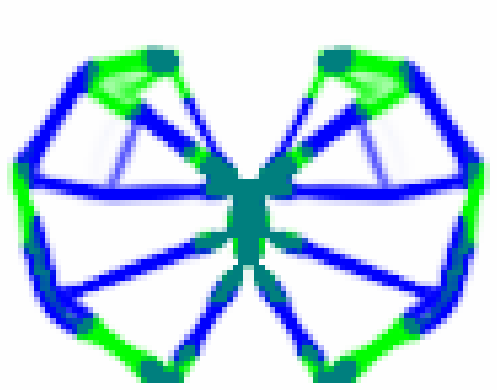
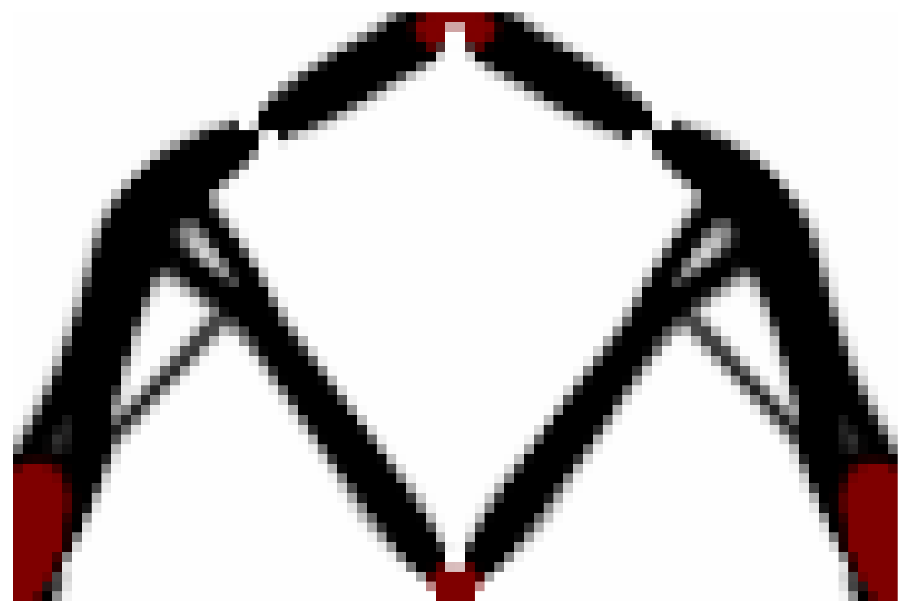
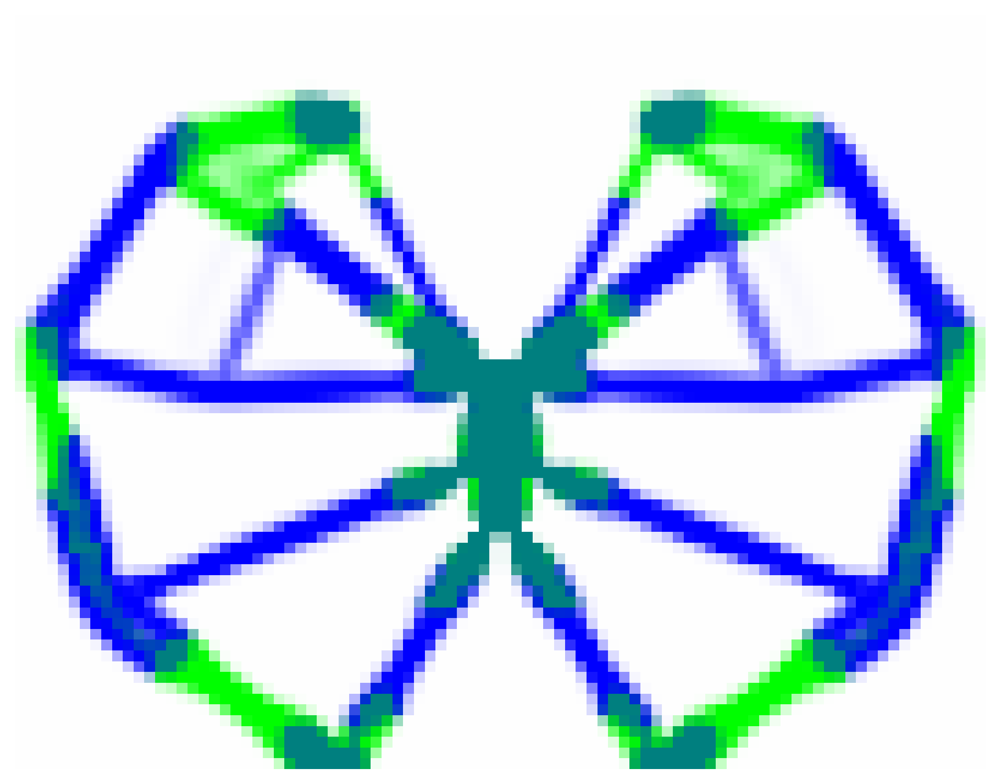
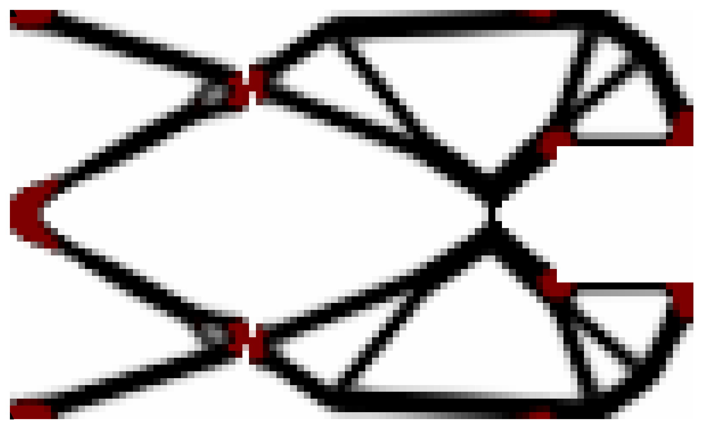
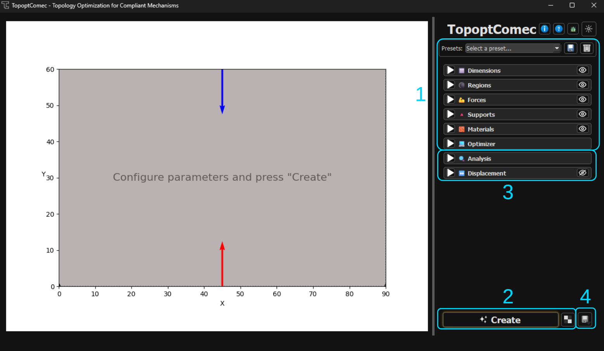

Create complex compliant mechanisms that move through material deformation. High-performance topology optimization in 2D and 3D.

Traditionally, machines move using pins, joints, and bearings. Compliant mechanisms are different — they achieve motion by bending and deforming their own structure.
TopoptComec uses advanced Topology Optimization to "grow" these mechanisms. You define the space, the forces, and the fixed points; the algorithm then sculpts the most efficient material distribution to perform the task.
Project began as a personal research tool for compliant mechanisms.
Everything you need to go from concept to optimized 3D-printable mechanism in minutes.
Optimized SIMP method with a 10x performance boost in V3. Real-time 2D synthesis and efficient 3D handling on standard hardware.
Design with up to 2 different materials in a single optimization. Mix stiffnesses to achieve precise motion goals.
Full 3D design domains, loads, and supports for real-world engineering applications.
Modern PySide6 interface. Draw domains, place forces, and watch the optimization converge interactively.
Generate huge mechanism runs via CLI. Parallelize mechanism creation for maximum efficiency.
Export to STL for printing, VTK for ParaView, or the new 3MF format. Seamless workflow.
Displacement visualization and analysis metrics available in just a few clicks.
Who can do more can do less. Design for both compliant and rigid structures.
Real results from TopoptComec. Click to toggle between Design and Motion.



Set your bounding box, draw regions, place forces, supports, and choose materials.
Hit "Create" and watch the SIMP algorithm sculpt the optimal topology in real time.
Check watertightness, checkerboard patterns, efficiency, and preview displacement animation.
Export your mechanism to STL, VTK, or 3MF for 3D printing, ParaView, or CAD.

No expensive software licenses or complex installations. 100% Python, 100% Open Source.
git clone https://github.com/ninja7v/TopoptComec.git
cd TopoptComec
pip install -r requirements.txt
python main.py
python main.py -p Gripper_3D
Join the next generation of engineers designing high-performance mechanisms with TopoptComec.